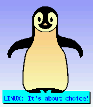

![[ Table of Contents ]](../gx/indexnew.gif)
![[ Front Page ]](../gx/homenew.gif)
![[ Linux Gazette FAQ ]](./../gx/dennis/faq.gif)
Talkback: Discuss this article with peers
In the last issue, your humble Editor asked if anybody wanted to send in any artwork to jazz up the Gazette. I received two entries.
|
Linux Total World Domination 2005 John Hinsley <jhinsley@telinco.co.uk> |

Penguin created using xpaint Rick Smith <rsmith13@tampabay.rr.com> |